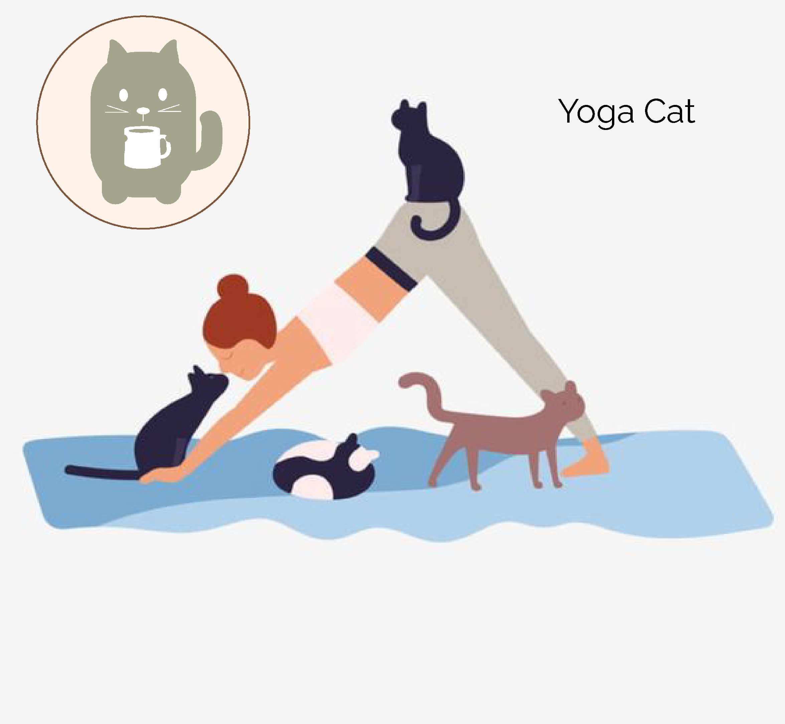

our purr-fect cat yoga event that combines the calming practice of yoga with the joy of spending time with rescue cats. Join us for a unique and memorable experience that will leave you feeling relaxed, rejuvenated, and full of feline love!
Limited spots are available, so make sure to secure your spot early!
